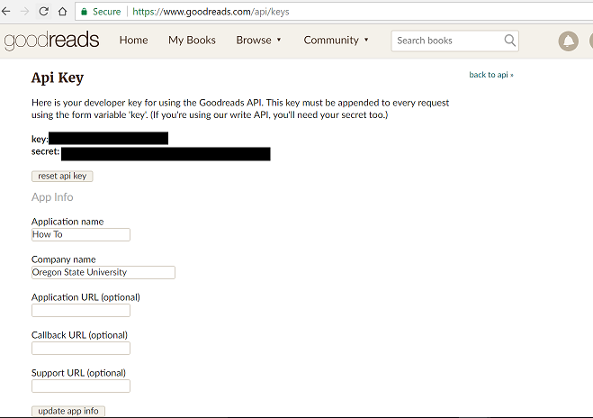

How to obtain Goodreads API key
Recommended for people like...
What kind of content can be obtained?
To obtain Goodreads API key, access to the Goodreads.com Goodreads.com developer key page
It is free to obtain developer key.

"Review Syndication: Goodreads has 10 million reviews across 700,000 titles - one of the largest and deepest collection of quality book reviews on the internet. Our API makes it easy to display these reviews on your website. Learn more about the Review Partner Program. Goodreads Connect: Let members connect to their Goodreads accounts, and you'll have full access to the books in their shelves, their ratings, their reviews, and their friends – the social reading graph. Use this to personalize an ecommerce store, power recommendations, show a widget of a member's favorite books, build a mobile or desktop client app, and more. Learn more about Goodreads Connect." - Referenced from https://www.goodreads.com/api/index
For more details, please visit Goodreads.com API web pageGoodreads.com API Summary